竹林の隣の家を買ったのでメンマを作り始めた
竹林の隣の家を買ったのでメンマを作り始めた
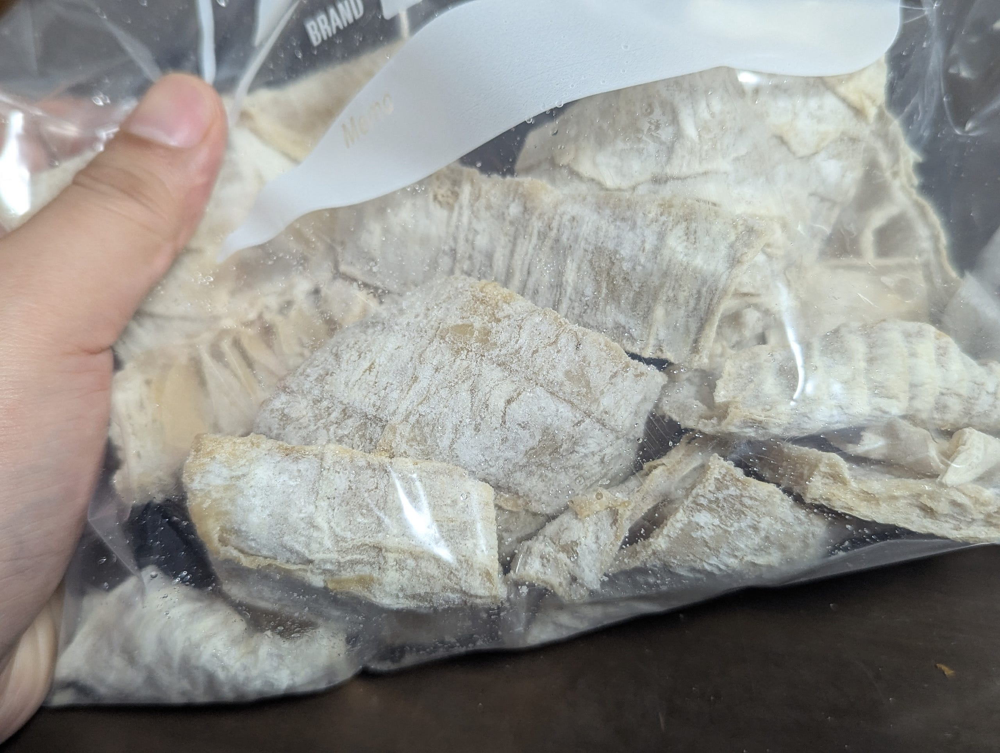
数年前に家を買ったのでメンマを作り始めたんですよ。何言ってるのかわかりませんね。とにかく今年で竹と戦い始めて5年目、メンマを作り始めて2年目になりました。
なんで別に農家でもないのにメンマを作っているのか、そしてなぜそんなことをする気になったのか。そもそもメンマってなんなんだ。そんなことを記した記事です。
この家を買ったときから裏に竹林があるのはもちろん承知しており、竹と戦わないといけないであろうということは十分理解してました。
実際枯れた竹は倒れてくるし、うっすら暗い竹林は不気味だし（防犯的な意味でも）、さらにある程度間引かないと根が… 根が庭に侵入してくるんです。うちの家は一応地中まである程度塀が入ってるんですが、竹はその下からやってくるので、うちの近くに来る前にある程度弱らせておかないと困っちゃいます。
そこで引っ越すタイミングでYouTubeのちゃんねるバンくんとかを見て、竹に対する理解を深めつつ、どうやって竹と生きていくかを考えていました。
一年目
一年目、とりあえずタケノコがばんばん生えてくるのが楽しくてしょうがなかったので、たくさん生まれたてのタケノコを掘って、たくさん茹でました。出てきたタケノコは食っちゃえば悪さもしないってわけよ！
「遠くの名産より近くの採れたて」とはよく言ったもので、掘ってきたタケノコをすぐに茹でてみると灰汁はほとんどでないし、適当に堀ったものなににすこぶるうまい。なるほどー、なんて思いながらいろんな食べ方をしました。
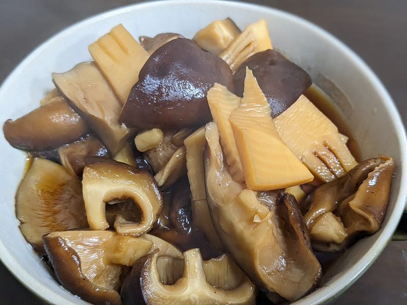
シイタケと味噌で和えたり。青椒肉絲に入れてみたり。たけのこご飯にしてみたり。衣をつけて揚げてみたり。
が、正直2本目くらいでもう飽きてました。
そうなんですよ。タケノコに限らずでしょうけど、同じもの食べ続けると飽きるんですよ…
なのにタケノコはうちの周りの手が届くエリアだけでも毎年50本くらいは生えてくるんです…
二年目
タケノコを食べきるのは無理だというのはよくわかりました。
ですのでシーズンの最初に数個とって楽しんだのちは、生まれてくるすべてのタケノコを小さいうちに始末する方向にシフトしました。
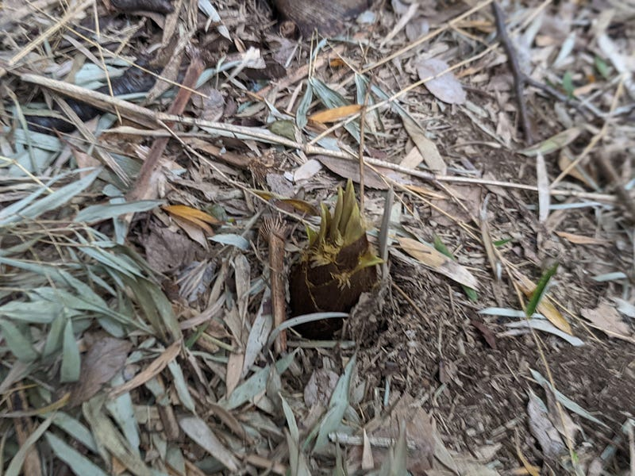
最初のうちはちゃんとシャベルで掘ってましたが、そのうちある程度伸ばしてから『蹴る』ないし引っ張って折る、が最も楽なことにきづきました。ただ、成長させちゃうとその分有機ゴミ（折れたタケノコ）が多くなるんで、これはなかなか判断に迷うところです。
自分が引っ越してくる前に見逃されて成長しちゃった竹も同時にあるので、それらを切る必要もあります。1年目もそれなりにやったのですが、手ノコで切るのもかなり疲れるので効率があがりません。
そこで（チェーンソーを買うほどではなかったので）レシプロソーを購入しました。これだと切るのが速いし枝打ちも簡単！（バールは持ってないからね）
マキタは、充電式を中心とした電動工具・園芸用機器（OPE）・エア工具・清掃用機器などのグローバルサプライヤーとして、世界各地で人の暮らしと住まい作りをサポートしています。www.makita.co.jp
三年目
ある程度竹の処理にも慣れてきたのですが、逆にちょっと見逃したすきに生えてる竹もそれなりにあって、あとから切り倒す必要もそれなりにありました。一本一本根本から切って、40～50㎝くらいに短く切っていく。先端は枝がそれなりに生えてるので枝打ち。この枝打ちもめちゃくちゃ面倒くさいんですが、これをしないと場所を取りすぎるんですよね。
竹だけに限らず、様々な植物と相対して理解したのですが、植物が敵になってしまうのは「奴らがかさばるから」というのが真理です。小さくすることさえできればただの生ごみなので特に怖くないんですよね。だから枝打ちは必須なのです。
そうなってくると粉砕機（ウッドチッパー）を買って竹をそのままチップにしてしまうというのもものすごく魅力的でした。
京セラの家庭向け電動工具の商品情報「ガーデンシュレッダー（粉砕機）」です。家庭で楽しく安全に、より良い住まいと暮らしを力強くサポートします。www.kyocera-industrialtools.co.jp
これがまた、ものによっては値段がものすごい手頃で手が出そうなんですよね。でもさすがに3年も竹と付き合ってたら俺は知ってる。竹はマジでかたいので、小さい粉砕機では多分ダメだということを。
これくらいは必要なはず。
動画で見てほしいのですが、竹を粉砕する音はいくら静音といってもかなりのもんです。住宅街で使うものではない。
四年目
竹炭ももちろん考えました。
用途は広いし、作り方も原理的には完全に理解できていたのですが、結構な火力を必要とするし、その過程で煙もそれなりにでるので、下手すると（火事にならなくても）消防署案件です。
うちのあたりは畑も多いので、ある程度の煙は黙認してくれるのですが、さすがに炭を作るレベルになるとちょっと話が違う。もちろん専用の機材を購入すればまた話は別でしょうけど、そんなのどこに置くんだ。
うまくやったとしても相当熱いものを庭先に置いて24時間とか冷めるまで待たなくてはいけないし、少量ずつ作るものでもないから… とにかく大変そうだな、という気持ちでした。
最後に残ったメンマ
話が長くなりましたが、3～4年考えた末、私ができる竹への対抗手段として最後に残ったのがメンマだったのです。
僕も調べて初めて知ったのですが、皆さん、そもそもメンマがどうやってできるか知ってますか？
メンマの原材料はなにかというと、長さ1メートルくらいになって薹（とう）が立ったタケノコです。外から見ると結構青々しくて食べられなさそうなこの1メートルくらいのタケノコ、実はまだ結構柔らかくて、なんと包丁が通るのです！
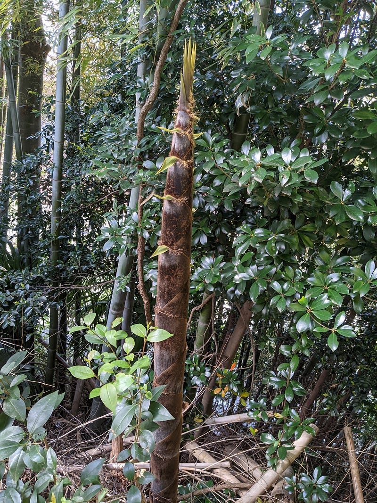
このぎりぎりまだ柔らかいタケノコを節を残すように輪切りにします。いわゆる竹になったときに見える線の部分ですよね。あそこはめちゃくちゃ堅いのであきらめて、包丁が通る柔らかさの部分を切っていくわけです。
これを茹でます。そんなに茹でる必要はないみたいですが、僕は今のところ一応1，2時間茹でてます。
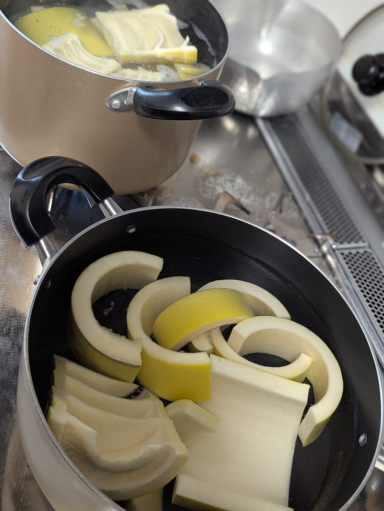
この茹でた竹にたっぷりの塩をかけて保存して発酵？させます。正直言ってこれ発酵してるのか自分にはわかりかねていて、なんでかというと塩の量がすごすぎてこんなんで増える菌類なんて本当にいるの？？と混乱する感じだからです。
ものの本によると、竹を軟化させるためには乳酸菌発酵を促す必要があって、そのためには塩分を入れすぎてはいけないとのことですが、4月ごろに採ったタケノコをその後しっかり晴れた日に天日干しにするにはどう考えても3か月くらいは保存する必要があります。
塩を控えて保存するとどんどん発酵が進んで溶けてしまうらしいので、ここは重量の20～30％くらいの塩を入れます。結構な量です。これをバケツとかに入れておいて保存します。
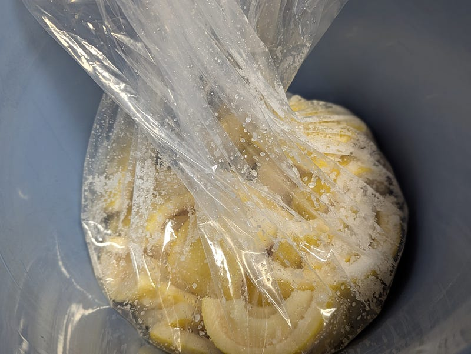
竹が腐るときのにおいを知っている自分からすると「腐ったらどうしよう」とドキドキでしたが、意外とふつうに保存できてしまいます。どんどん水が出てきて、ある程度たつと今度はタケノコのまわりに白い何かがつきます。多分これが菌だと思うのですが、よくわかってません。
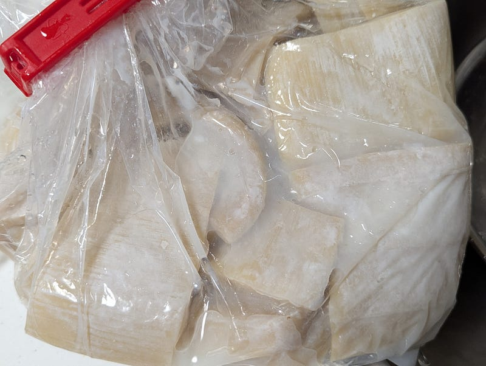
で、これを天日干しないし、乾燥機などでカリカリに乾かしたものが塩メンマです。去年は天日干しオンリー、今年は天日干し＋オーブン60℃で乾燥させました。
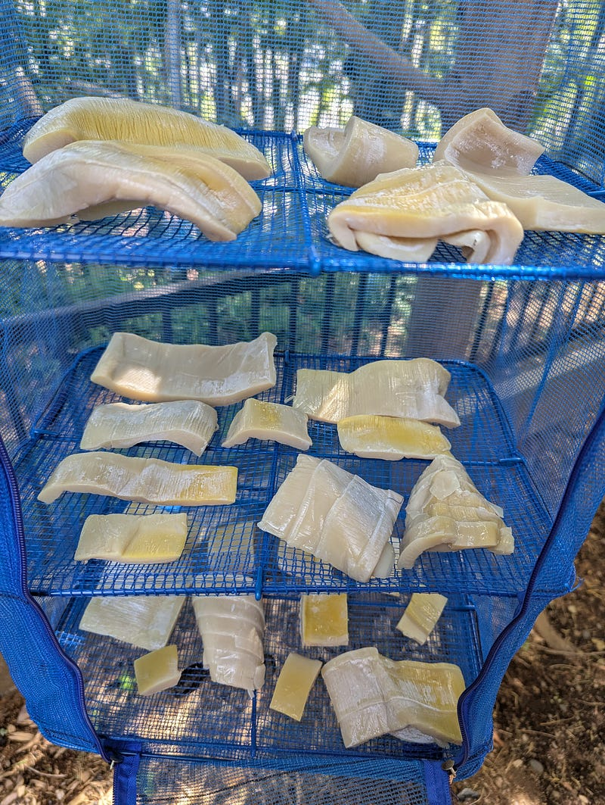
カリカリに乾燥させたのがこちら。
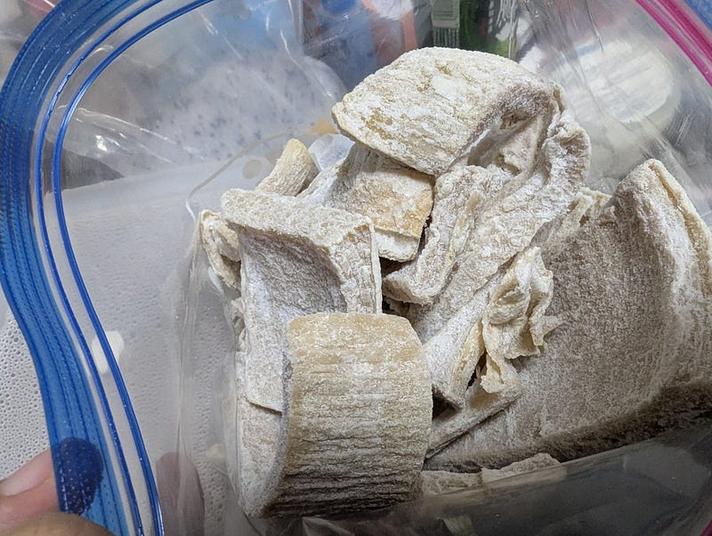
すごいですよね。元は以下の写真みたいなタケノコですよ。人間はこんな人を叩くのに使えそうなものまで食べ物にしてしまうのです。
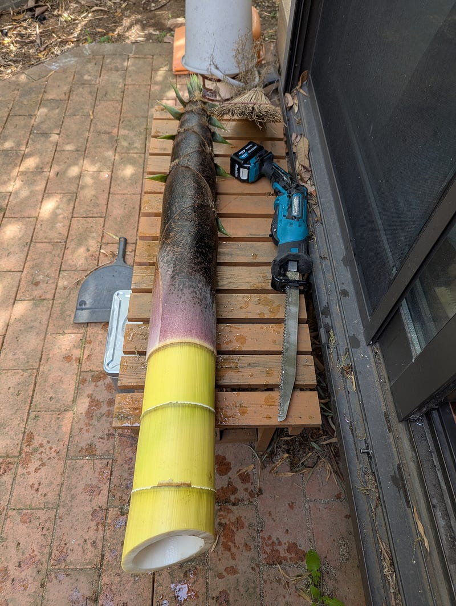
一つ一般家庭でメンマを作るときに気を付けないといけないのが、格納場所です。塩漬けしているときのメンマ、もちろんだいぶ小さくはなるのですが、それでも結構場所を取ります。
今年は中くらいの孟宗竹を2本ほどやったのですが、それだけで10リットルバケツがパンパンになる量になってました。
塩抜きして、調理
このメンマは塩漬けされてるので、このままでは塩辛くて食べられません。なので水につけて塩抜きをしてから調理します。
感覚では半日～1日くらい水につけて、一回か二回水を変えながら塩抜きするといい感じになります。塩抜きできたら、もうほぼ皆さんの知ってるメンマです。
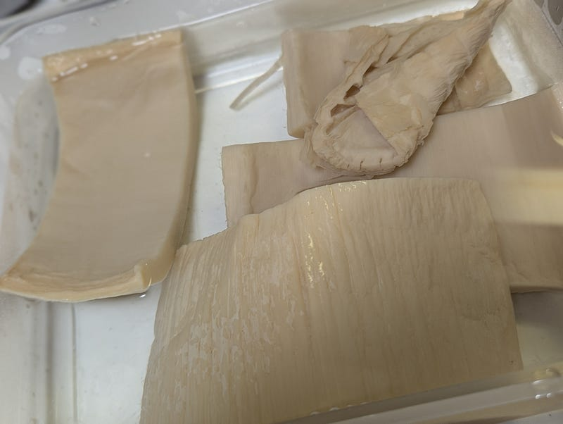
あとは味付けしてできあがり。
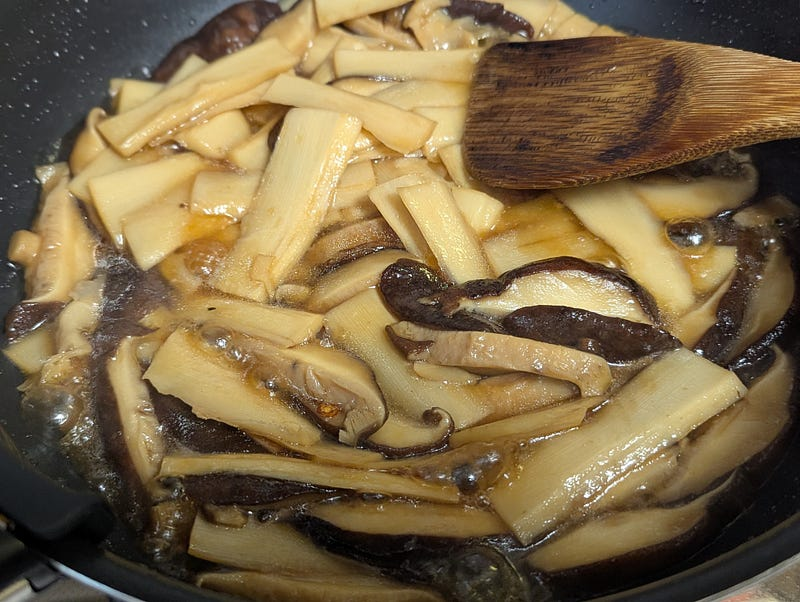
おいしい。もうこれで一年中タケノコ食べ放題。
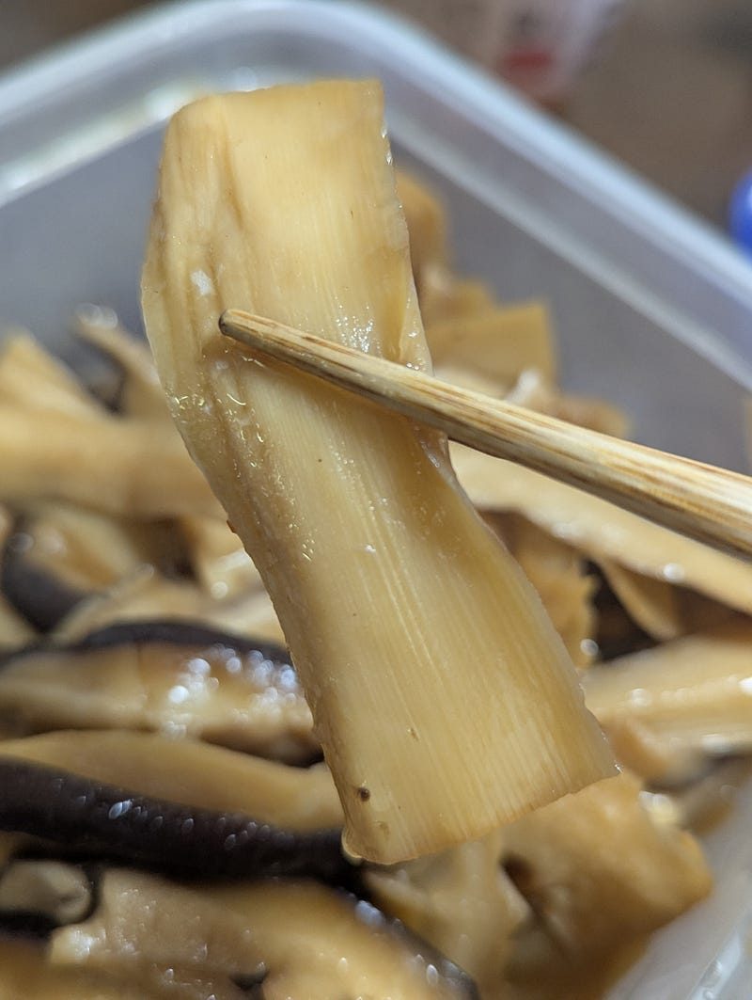
今後の展望（？）
自作メンマの何がいいって、メンマの形を自分で好きなようにできることです。切り方を調節して好きな形の好きな味付けのメンマを食べられるのは最高ですね。
ただこれでもつける場所を取るので、家でまとまった量を作るのはなかなか難しいです。やはりもっと小さくして、庭に放置できる形で使うのがいいんだろうなぁ。
こういうニュースなども見ていると、さらに発酵させるとまた変わるということなので… メンマの切って茹でる工程までやってから、糖とイーストを加えて発酵させれば他のものに使える…？ともちょっと考えています。
だいたいこんな感じです。
シーズン最初は生タケノコ、数か月でメンマを作ってあとは次のシーズンまで食べつなぐ、というのはできそうなので、あとは効率の良い乾燥方法なんかを工夫すればもっと量を作れて、いい感じで竹を消費できそうな気がします。
今後の俺と竹の戦いにこうご期待だ！